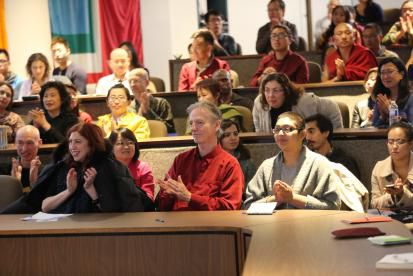

前世今生——佛教人生观——加拿大多伦多大学演讲
『2014年10月30日』
主持人：
大家好！今晚实在让人惊叹，座无虚席，看来很多人都对演讲嘉宾和主题充满兴趣。
我们今天非常荣幸地邀请到了索达吉堪布——一位极具影响力的藏传佛教学者。如今的时代充斥着困惑、虚伪，以及发达的娱乐影视和频繁的颓废堕落，而堪布却会让您领略什么是真诚、慈悲与智慧。
上周我听受了堪布在约克大学的演讲“禅定——心性休息”，真是一次十分美好的经历。今晚我站在这里，完全是因为那个讲座带给我的感受如此深刻、超乎想象。听堪布演讲的那一刹那，我就意识到有机会遇见这样一个人，自己是多么幸运！他没有任何掩饰，完全践行纯正的教法，实事求是且极具幽默。
今晚的主题是“前世今生——佛教人生观”。这个主题对我们有什么意义呢？无论您相信或不相信，来世都等着您，所以每时每刻我们都可以审观自心，看看自己为来世播下了怎样的种子，同时也可以观察前世和今生又如何造就了当下的我们。
经过上周在约克的体会，今晚我对于聆听堪布将科学融会于佛法的别具一格教授更加向往。
能够聆听堪布的演讲，我们真的很幸运。有请堪布——
这是我第一次来到多伦多，前两天在约克大学就禅修方面进行了交流，昨天在多伦多大学宗教系，跟一些师生探讨了藏密宇宙观。从中我发现，这里的很多老师和学生非常关心周围的世界，关注人的内心以及生命的价值，这是很好的。
今天我们一起讨论的话题是“前世今生——佛教人生观”。
一、生与死的思考
前世今生的理念，对每个人都有重大的意义。
不过令人惋惜的是，如今的芸芸众生很少关心这个话题。为什么会这样呢？一方面现在的主流文化，无论在东方还是西方，都不是内在精神，而是外在物质，大多数人唯一在意的就是钱财、住处、衣食等。另一方面，在如今的时代里，各种资讯、学说空前繁盛，这虽然有其益处，但是眼花缭乱的信息也让人变得浮躁、散乱，很少有人会静下心来思考生命，比如想一下“我从何处来，最后到何处去”。
我记得一位科学家曾说：人的出生和死亡，对我们来说依然是无知的。这句话值得很多人思考。
不过，人的生与死，真的深奥到无从了知吗？也不是这样，任何人通过认真研究，都可以找到答案——人从前世而来，死后去往后世，这一点并不难。
大家都知道，人的身体最初从母胎中形成，到了死亡时，就化为乌有，通过水葬、火葬或天葬而消失于世间。但人的心识也是这样吗？在座的是否思考过？如果思考过，你的答案是什么？
前段时间有一位诺贝尔奖得主在演讲中说：“如果来世存在，我希望……”我听了这个话也非常感慨：他的来世只存在于“如果”中。
我出生于一个宗教家庭，从小就相信前后世的存在，后来读书时学了无神论、唯物论，也产生一些疑问：“也许人死就像灯灭一样，彻底没有了吧。”所以对于前后世，在一段时间中我也处于模棱两可、犹疑不决的状态。再后来我出了家，首先想到，佛教里是否有关于前后世的答案呢？于是翻阅了印度、藏地的许多论著以及古今中外的众多资料，同时跟很多有智慧的人辩论，不管在冬天的雪地里，还是夏天的雨水中，都不断探索着。（辩论是藏传佛教特有的一种学习方式，把自己的困惑与质疑抛给对方，让对方回答；同时对方发出问难时，自己进行解答。）经过一段时间的探究，我心中的疑团彻底消失，树立起前后世的正信。后来我也翻译了藏传佛教中有关前后世的一些论典，并且在不同场合中跟人们交流这方面的道理。
在谈及前后世，尤其说到后世时，有些人可能会不由自主地想到死亡，从而心生忌讳，不愿去讨论和探索。我认为这是消极、脆弱的表现。
虽然现代医学有了前所未有的进展，人的寿命得到一定保障，但是每个人在将来的某一天，依旧不可避免要面对死亡。死亡之后怎么办？如果后世不存在，死了就一了百了，当然无需多虑什么，但是万一有后世，那时该怎么办？这些值得去思考。
其实万一有后世，提前做准备就显得尤为重要。即使退一万步讲，假如后世并不存在，而你却认为有后世，由此常常守护自己的言行与内心，令其清净无染，这对你的人生会不会造成危害与痛苦呢？不会。反而只会带来饶益。

二、前世不虚，后世不灭
前世存在的依据
如何证明前世存在呢？下面我以科学与佛教相结合的方式，做一些介绍。我本身是佛教徒，但是在希求真理方面，始终觉得不用分别宗教、国家、民族、身份等，重要的是找到真理。
要证实前世，实际就是寻找心识的来处。有些人也许觉得这非常困难，其实也并非这样。
首先我们要知道，心识肯定是存在的。那么，人来到这个世界的第一念心识，有没有因呢？
如果没有因肯定不合理，因为如果无因而生，就应随时随地出现心识，但这与事实相违。如果不是无因，就肯定有因，接着观察：这个因是常有还是无常的？如果常有，不论它是造物主、万能神，还是大自在天等等，都不可能产生果法。
这一点，大家可以在生活中观察，任何事物的因能否是常有的。如果是常有的法，怎么有能力生果呢？如果它可以生果，那生果前和生果后是一体还是他体？如果是一体，应成生果后也没生果；如果是他体，应成它有两个阶段，如此一来就不是常法了。这样一观察就知道常法确实不能生果。
因此，如果认为有一个恒常的主宰者创造所有众生，就可以用上述的方法破斥。同时，也可以这样分析，如果存在这样的主宰者，那么他创造众生的心识，无外乎两种方式——同时产生所有心识、次第产生这些心识。
如果是第一种情况，显然和事实相违，因为世上的所有生命——人类以及其他动物，都是次第出生的，并非一时顿现。如果是第二种情况，可以继续观察，他是有心而造还是无心而造？如果有心而造，那产生众生时他会想“我要造这个坏人，我要造那个好人……”，但是这种情况，任何宗教或学说都不承认；如果是无心而造，这样的主宰者目前为止也无法找到。
我今天并不是要破斥哪个宗教，而是因为在理证分析时，不论什么人，都应该运用公正、细致的智慧观察。如果无法运用理证证实，就要寻找可靠的圣教。一个观点，如果既没有理证依据，又没有圣教支撑，就说明它还有待观察。
上述分析告诉我们，心识的因只能是无常法。
说到这里，有些人也许觉得：“心识的因就是自己的大脑，或者父精母血。”这种观点也不合理。
对此，可以这样驳斥：心识是明知的体性，跟无情法截然不同，所以它的近取因不可能是无情法。也就是说，心识只能由心识产生，而不可能从无情的物质中产生，物质性的身体只能给与心识辅助作用，好比苗芽的近取因只能是种子，阳光、水土等只是对它起助缘作用。
关于这个问题，印度的法称论师在其著作中，罗列了大量有说服力的依据。
通过上面的观察，我们可以了知：人来到世间的第一念心识是有因的，这个因是无常法，而且必定是自己前面的同类心识。由此就可证实，前世的心识是存在的。
有些人可能会想：“如果前世真的存在，为什么很多人不信呢？”这其实就如那句名言所说——真理掌握在少数人手中。
在人类历史的长河中，这种情形比比皆是，比如在长达一千多年的时间里，“日心说”一直不被认可，很多人认为“如果地球下方有人居住，肯定会掉下去”，以致支持“日心说”的科学家还受到了迫害。所以，很多人不相信前世也不足为奇，但这无法说明前世不存在。
生命的去向
从前，藏王赤松德赞的女儿白玛赛，刚到17岁时，忽然得急病去世了，藏王心痛不已。莲花生大士对藏王说：“死亡是残酷的，但死亡又不是一切的结束，只是灵魂离开了肉体……肉体注定会消失，但灵魂必定会继续，而一旦超越了生死，生命就有了意义。”
我觉得莲花生大士的话，非常值得大家思考。人生中，有时一位老师的一句话或一堂课，会让我们得到很多启发，一生乃至很多生的命运都得以转变。
关于心识会永远存在，在科学界也可以找到很多依据。
有一位著名科学家叫约翰·艾克尔斯，曾于1963年荣获诺贝尔生理和医学奖，他一辈子探索大脑神经学，在此期间撰写了很多本书，比如《自我与它的大脑》《面对现实》等等。大家不妨看一看这些书，都是很好的著作。约翰·艾克尔斯认为：人体内蕴藏着一个思想与识力的“我”，它控制着大脑，如同人脑指挥电脑。这种非物质的“识我”，在肉体死亡后，仍然存在，并可以永生不灭。
所以，人除了身体，还有一个心识独立存在，它不会随着身体的消失而灭亡。
另外，美国生物学家罗伯特·兰扎在《生物中心主义》一书中，运用五种依据论证了生命的永恒存在，指出“生命不因身体的死亡而结束”。
罗伯特·兰扎还举了一个例子，当爱因斯坦得知老朋友贝索去世时，写信给贝索的家人：“现在贝索比我先行一步，离开了这个奇怪的世界。但这并不意味着什么。对于我们笃信物理学的人来说，过去、现在和未来之间的区别只不过是一种幻觉而已，尽管这种幻觉有时还很顽固。”对此，兰扎评论说：“新的证据不断表明，爱因斯坦是正确的——死亡只是一场幻觉。”
既然如此，生命也就不会因死亡而结束。对我们而言，这其实是个好消息。
现在很多人非常害怕死亡，认为人死了就灰飞烟灭，所以在世时拼命地存钱。不知道加拿大人怎么样，中国的很多人喜欢存钱，结果死亡来临时，钱没有花光，生命已经花光了，只能在无比伤心、遗憾的状态中离开。而他们存在银行的钱，却无法取出来，因为家人都不知道密码，也找不到银行卡，最后可能银行最高兴吧。
总之，人确实是存在后世的，这方面的证据很多。
为什么我记不起前世？
有人问：“如果前世存在，为什么我记不起呢？”一方面，记不起不代表不存在，另一方面，记不起也有其原因。
比如，对于世界上的很多暗物质，人们尚处于未知状态，但不代表它们不存在；地下的宝藏，人们并未看到它，也不代表它不存在；再比如每个人的内在潜能——音乐、画画、数理化等能力，很多人目前并不了知，但是它依然在那里。所以，记不起来前世、不知道前世，不代表前世不存在。
另一方面，记不起前世也是有原因的，这一点佛经里有讲述：人的心识进入母胎后就昏厥了，形成一种胎障，导致了记忆的断失，就如同进入地下室很多信息无法传递一样。
不过也有些人能回忆前世，尤其他们处于孩童时，这种记忆非常清晰。这样的事例，不论古今中外，有或没有信仰的人群中，都时有出现。我也接触过许许多多能回忆前世的人。
所以，如果不承认前世，那么首先就要推翻回忆前世的大量案例，而这是不可能的，因为谁也无法颠覆事实。
三、生命的奥秘，值得探究
大家如果想深入了解前后世，可以阅读佛教的相关经论，里面对生命如何延续至今、现在的种种状态，进行了详细剖析，并且对生命的去向做了细致介绍——人死之后，意识脱离身体，不再受制于身体，可以自在飞行，可能投胎成其他地方的人或动物，也可能进入天堂，或堕入地狱。
除了佛教，世间也有其他宗教承认天堂和地狱。我曾询问这些宗教的有些教徒：“人升到天堂后，是永远住在天堂吗？堕入地狱后，是永远待在地狱吗？”回答说：“这不是凡夫的境界，不能揣测。”当然，一方面我也相信是这样的，但另一方面我觉得这方面佛教的观点就比较明确——即使升到天堂，一旦善业穷尽，还是会下堕，变成人或旁生，乃至地狱众生；即便堕入地狱，一旦恶业消尽，也会从中出离，获得人身，乃至上升天道。
因此，我觉得不同宗教之间如果能常常交流、讨论，取长补短，那么对人类生命的研究可能会更加完善。
总之，人的生命，从无始延续至今，在没有获得解脱之前，还会不断流转，这一点毫无疑问。希望很多老师和同学运用智慧去探索这方面的奥秘，这非常有必要。
包括佛教徒自己，也需要不断学习前后世的道理。虽然对于前后世，佛教里有丰富的教理，但是如果没有认真学习，还是难以生起定解。比如个别佛教徒，别人问他有没有前后世，他回答“有”，再问为什么，就无言以对了，因为他从没仔细思维过，内心也模糊不清。像这样不通过学习引生定解，而只是鹦鹉学舌，并不是科学的态度。
四、让人生变一番风景
前后世的道理，不应当只是宗教的观点，而应当成为全人类的人生观。
不过，如今很多人并不知道这一道理，因此对于前后世，不需要以宗教的外衣去包装，需要的是每个人去发现。
当然，如果有人不认同前后世的存在，也可以用确凿的依据驳斥，这是佛教认可的，因为佛教非常包容。不过从古至今都没有人能推翻这一观点。
因此，现在最重要的，不是分别你的宗教、我的宗教，或者你有信仰、我没有信仰，而是要知道：一种基本的人生观一直在那里，但是很多很多人都茫然不知，这是人类的巨大损失。如果前后世不存在，我们盲目地认为存在，这不合理；而如果前后世存在，我们却一无所知，那就是一种悲哀。
所以，大家应该保持清醒的头脑，运用智慧去探索、去发现。
如果有了正确的人生观，还要进一步寻找正确的价值观。
世间的每个人都有一个共同愿望——远离痛苦、获得幸福。如何实现这个愿望呢？佛教中讲，行善能获得快乐、造恶会感召痛苦，这就是一个基本价值观。
如果摆正了人生观和价值观，不仅你的人生会变成另一番风景，你的家庭也会变得幸福，乃至这个世界也会增添一份和谐。